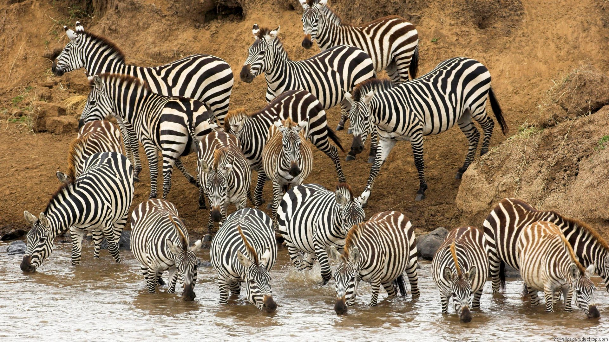
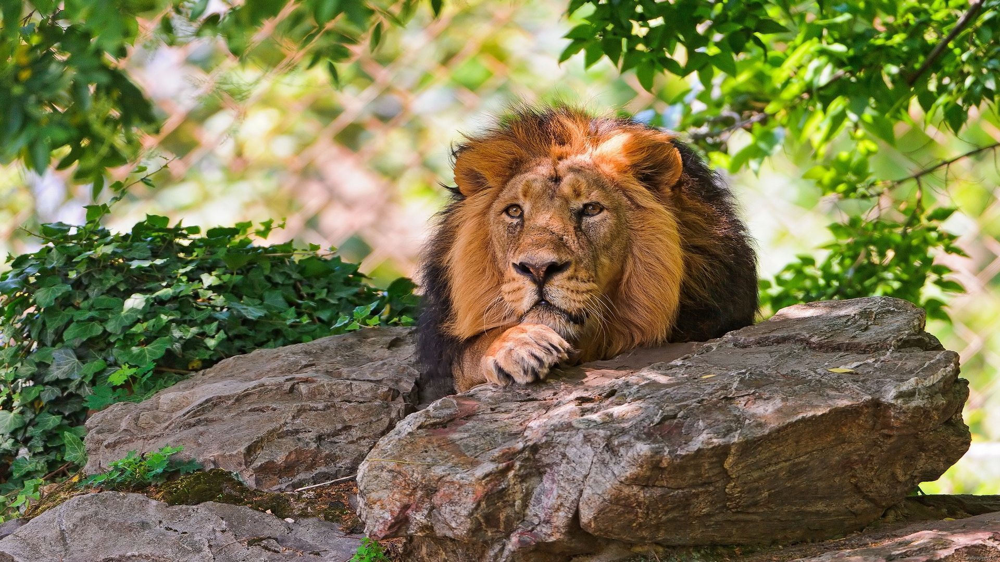
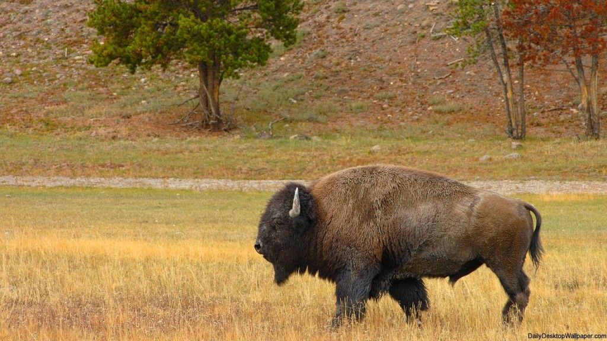
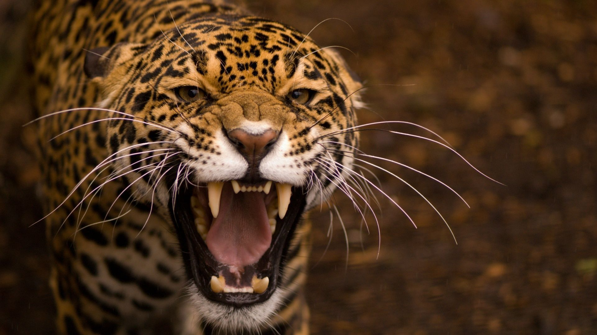

Although the natural world is a source of great beauty and happiness, vast numbers of animals routinely face serious challenges such as disease, hunger, or natural disasters. There is no “one-size-fits-all” solution to these threats. However, even as we recognize that improving the welfare of free-ranging wild animals is difficult, we believe that humans have a responsibility to help whenever we can.
We respect wild animals as individuals with their own needs and preferences, rather than seeing them as mere parts of ecosystems. But this approach demands a richer understanding of wild animals’ lives. We want to take a proactive approach to managing the welfare benefits, threats, and uncertainties that are inherent to complex natural and urban environments. Yet, to take action safely, we must conduct research to understand the impacts of our actions. The transdisciplinary perspective of wild animal welfare draws upon ethics, ecology, and animal welfare science to gather the knowledge we need, facilitating evidence-based improvements to wild animals’ quality of life.
There are 21 zoos in Bulgaria, distributed throughout the country. Almost all (19) of them are publicly owned and managed by local municipalities. Seventeen of these zoos are open to visitors, including the Kyustendil Zoo, although it has had its license revoked since 2011.
We respect wild animals as individuals with their own needs and preferences, rather than seeing them as mere parts of ecosystems. But this approach demands a richer understanding of wild animals’ lives. We want to take a proactive approach to managing the welfare benefits, threats, and uncertainties that are inherent to complex natural and urban environments. Yet, to take action safely, we must conduct research to understand the impacts of our actions. The transdisciplinary perspective of wild animal welfare draws upon ethics, ecology, and animal welfare science to gather the knowledge we need, facilitating evidence-based improvements to wild animals’ quality of life.
